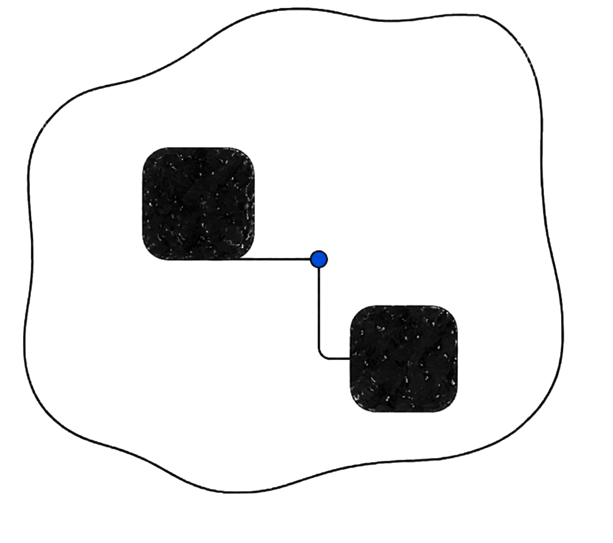
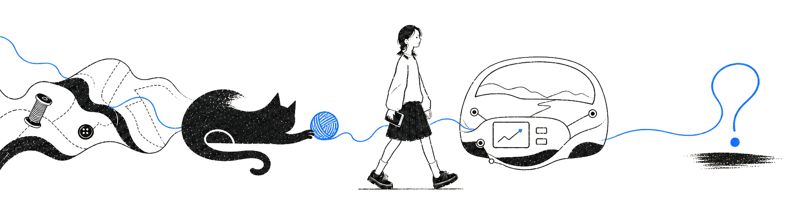
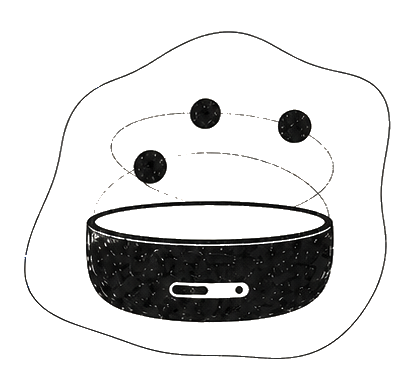
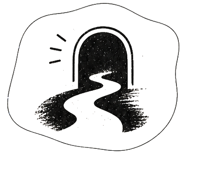

PRODUCT THINKING
让判断在约束中成形
01
ROLE OVERVIEW / 角色概览
把问题拆开，再一起收口。

经历抽屉
ABOUT / 关于我
让判断在真实世界里成立。
工业设计训练了我观察，产品工作让我学会取舍。
现在，我把用户、实物和系统放到同一张桌子上，从问题发生的地方开始，逐步把方案变成可以验证、可以交付的东西。
我会关注
- 用户与场景看见问题发生在哪里
- 硬件与约束摊开限制，明确取舍
- 规则与协作让方案可执行、可验证
02
SELECTED WORKS / 精选项目
四个开放问题，四种落地尺度。




项目详情
03 教育经历
设计训练与工程判断的两段底色。
2024-2027
东华大学
机械工程学院
机械硕士
研究方向：工业设计工程
硕士阶段 · 个人荣誉
2025.07 “汇创青春”上海大学生文化创意作品展示活动 · 市级一等奖 · 个人
2020-2024
上海海事大学
徐悲鸿艺术学院
工业设计学士
本科阶段 · 个人荣誉
2022.02 上海市大学生创客大赛 · 市级三等奖 · 排名第一
2022.07 上海市大学生工业设计大赛 · 市级三等奖 · 个人
2022.07 中国“互联网+”大学生创新创业大赛 · 校级二等奖 · 排名第二
2022.08 中国好创意暨全国数字艺术设计大赛 · 国家级三等奖 · 个人
2022.08 “上图杯”先进成图技术与创新设计大赛 · 市级二等奖 · 个人
2022.09 “汇创青春”上海大学生文化创意作品展示活动 · 市级二等奖 · 个人
2022.11 全国大学生海洋文化创意设计大赛 · 国家级佳作奖 · 排名第二
本科阶段 · 志愿经历
2023 第六届进博会优秀志愿者
2021-2022 院学生会平面部部长
疫情防控志愿者 · 百人大清滩优秀志愿者
陆家嘴地铁站志愿者 · 徐悲鸿艺术学院迎新志愿者
DIGITAL TWIN / 数字分身
想知道我怎么做判断？
可以和我的数字分身聊项目、取舍，以及我如何把复杂问题拆成可执行的方案。
数字分身交流位准备中
从一个项目开始，问我为什么这样判断。